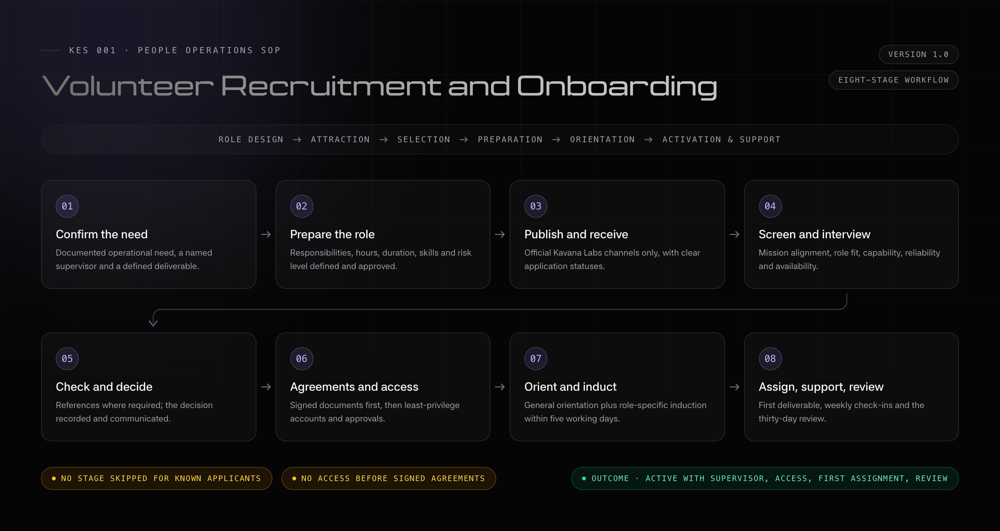

1. Document Control
- Document title
- Volunteer Recruitment and Onboarding SOP
- Program
- Kavana Labs Engineering Series
- Primary program
- KES 001
- Version
- 1.0
- Document owner
- Volunteer and People Operations Lead
- Operational owner
- KES Program Coordinator
- Approved by
- Executive Director or authorised Program Lead
- Review frequency
- After every cohort or every six months

2. Purpose and Scope
This SOP explains how Kavana Labs identifies, recruits, assesses, onboards, activates, supervises and confirms volunteers supporting KES programs.
It is designed to ensure that every volunteer is recruited for a defined operational need, understands the Kavana Labs mission and KES priorities, receives only approved access, has a named supervisor and first assignment, protects learner information, and is reviewed based on documented contribution.
Covered volunteer functions
- Program coordination and administrative support
- Participant and community support
- Technical support and learning-platform administration
- Marketing, publicity and social media
- Graphic design, photography and video
- Content, documentation and reporting
- Partnerships, outreach and event coordination
- Monitoring, evaluation, research and alumni support
3. Recruitment Principles
Talking points for every recruiting lead
- KES recruitment is not an exercise in collecting as many volunteers as possible.
- Each opportunity must correspond to actual work, a supervisor, expected hours, deliverables and a review period.
- Enthusiasm matters, but reliability, communication, availability, mission alignment and willingness to learn are equally important.
- Personal relationships must never bypass application, screening, agreements or access controls.
- Do not promise employment, payment, leadership roles, certificates, recommendation letters, travel or international opportunities unless formally approved.
- Access to learner information, systems and public channels must be based on role requirements and the principle of least privilege.
- Prefer volunteers who take ownership, communicate blockers early, document work and complete agreed tasks consistently.
4. Roles and Responsibilities
KES Program Lead
- Approves the need for volunteers and high-risk roles.
- Makes final decisions in disputed cases.
- Approves release for serious misconduct or program risk.
- Ensures recruitment supports current KES priorities.
Volunteer and People Operations Lead
- Owns this SOP, applications, screening, interviews and volunteer records.
- Sends decisions and onboarding documents.
- Tracks signed agreements, orientation, probation and offboarding.
- Where this role is vacant, the KES Program Coordinator performs these duties.
Functional Lead
- Defines the role and participates in selection.
- Provides role-specific induction and a first assignment.
- Supervises the volunteer and completes the 30-day review.
- Recommends confirmation, extension, reassignment or release.
Technical Administrator
- Creates approved accounts and permissions.
- Records access and enables security controls.
- Removes access during offboarding or role changes.
- Investigates access and security incidents.
Volunteer
- Provides accurate recruitment information and signs required agreements.
- Protects confidential information and uses systems responsibly.
- Completes work, reports blockers early and documents handovers.
- Complies with Kavana Labs policies and professional boundaries.
5. End-to-End Workflow
6. Stage One: Confirm the Volunteer Need
Questions the Functional Lead must answer
- What work is currently not being completed?
- Why does it matter to KES 001 or Kavana Labs?
- What exact output should the volunteer produce?
- What weekly hours and duration are realistic?
- Who will supervise the volunteer?
- What systems, data or accounts will be required?
- Can the team properly supervise this person?
- Is the work appropriate for a volunteer rather than a paid professional?
Volunteer role request checklist
- Role title is defined.
- Functional area is identified.
- Recruitment reason is documented.
- Three to six responsibilities are defined.
- Weekly commitment is stated.
- Commitment duration is stated.
- Remote, physical or hybrid arrangement is stated.
- Required and preferred skills are separated.
- A named supervisor has agreed to manage the volunteer.
- The first expected deliverable is identified.
- Required system access is identified.
- Risk level is assigned.
- Program Lead approval is recorded.
7. Role Risk Classification
| Risk level | Typical examples | Required controls |
|---|---|---|
| Standard | Design support, event logistics, public-content preparation without publishing access, general research. | Application screening and interview. |
| Elevated | Participant information, direct learner communication, official social media, internal Drive, learning platform, website, partnerships or sponsorship records. | Detailed interview, identity confirmation, reference where appropriate, explicit access approval and closer probation supervision. |
| High | Production administration, credentials, full participant databases, financial accounts, contract authority, unsupervised work with minors or official public statements. | Separate written approval from the Program Lead and relevant technical or executive authority. Acceptance as a volunteer is not sufficient. |
8. Stage Two: Prepare the Opportunity
Required content
- Kavana Labs and KES context.
- Role title, purpose, functional area and reporting line.
- Key responsibilities, weekly availability and commitment duration.
- Required and preferred skills.
- Working arrangement and any evening or weekend expectations.
- Application deadline and selection process.
- Clear statement that the role is unpaid unless otherwise stated in writing.
- Statement that activation depends on agreement signing and onboarding.
Required KES positioning
- Kavana Labs is building a long-term engineering, research and innovation ecosystem.
- KES means Kavana Labs Engineering Series.
- KES 001 is the current flagship entry program and immediate operational focus.
- The aim is to execute stable cohorts and create pathways into projects, deeper learning, research, volunteering, mentorship, engineering and leadership.
- Volunteers help build repeatable systems rather than supporting a one-off event.
Publication checklist
- Role description is approved.
- Application form has been tested.
- Deadline and time commitment are visible.
- Volunteer status is clearly stated.
- Selection stages are stated.
- Approved branding is used.
- Application confirmation message is ready.
- A responsible person is assigned to monitor applications.
9. Stage Three: Receive and Acknowledge Applications
Applications must be submitted through the approved Kavana Labs application system or form. Informal interest through WhatsApp or direct messages should be redirected to the official process.
Application information to collect
- Full name, email, telephone, country and location.
- Age confirmation where relevant.
- Role applied for and current occupation or study area.
- Relevant skills, experience and work samples.
- Weekly availability and commitment duration.
- Reason for joining and understanding of KES.
- Evidence of completing a responsibility.
- Example of teamwork.
- Device and internet access.
- Consent to contact and accuracy declaration.
Acknowledgement checklist — within two working days
- Confirm receipt and the role applied for.
- Explain the next stage and expected update period.
- Do not imply that selection has already occurred.
- Store the application in the recruitment record and assign a status.
Recommended statuses: New, Under review, Shortlisted, Interview scheduled, Reference check, Accepted, Reserve, Not selected, Withdrawn, Onboarding, Active and Released.
10. Stage Four: Screen Applications
At least two people should review applications for elevated-risk or leadership roles where practicable.
Minimum screening criteria
- Reasonable understanding of the role.
- Availability matching program requirements.
- Teamwork and communication ability.
- Evidence of reliability and responsibility.
- Willingness to learn and alignment with Kavana Labs’ mission.
- Acceptance of volunteer accountability.
- No obvious conflict with program values or safeguarding responsibilities.
Application scoring rubric
| Category | 1 — weak | 3 — adequate | 5 — strong |
|---|---|---|---|
| Mission alignment | Unrelated or focused only on personal benefit. | General interest in engineering, education or volunteering. | Clearly understands the long-term Kavana Labs and KES direction. |
| Role understanding | Does not understand the role. | Understands some responsibilities. | Clear and realistic understanding of the work. |
| Relevant capability | No evidence. | Some transferable skill or experience. | Strong evidence through work, projects or portfolio. |
| Reliability | Vague or inconsistent answers. | One reasonable example of responsibility. | Consistent ownership and follow-through. |
| Availability | Does not meet requirements. | May work with adjustments. | Clearly meets the expected commitment. |
| Communication | Unclear or incomplete. | Adequate. | Clear, direct and professional. |
Decision guide: 25–30 strong shortlist; 20–24 shortlist where role and availability match; 15–19 hold, clarify or consider another role; below 15 do not shortlist.
Screening checklist
- Application is complete.
- Requirements and availability are reviewed.
- Relevant work and portfolio are checked.
- Mission alignment is assessed.
- Conflicts and risks are noted.
- Score and decision are recorded.
- Reviewer name and date are recorded.
11. Stage Five: Volunteer Interview
Interviews should normally last 25–45 minutes and include the Volunteer and People Operations Lead or Program Coordinator together with the relevant Functional Lead.
Opening and KES talking points
- Clarify that the applicant has not yet been selected.
- Explain that notes will be recorded for recruitment purposes.
- Kavana Labs is building a long-term engineering, research, innovation and institution-building ecosystem.
- KES 001 is the current main program focus, but the aim is not to run isolated training events.
- Volunteers are expected to build reusable systems and treat volunteering as measurable responsibility rather than an informal title.
Required interview questions
- What attracted you to Kavana Labs and KES?
- What do you understand about KES 001?
- Why did you choose this role?
- Which responsibilities can you already perform confidently?
- Which areas require support or training?
- Describe a responsibility you completed without repeated reminders.
- Describe a time you could not meet a commitment and how you communicated it.
- What existing commitments affect your availability?
- How many hours can you realistically contribute each week?
- How do you prefer to receive feedback?
- How do you handle unclear instructions?
- What would you do if you found an error before publication?
- How would you handle confidential participant information?
- Are you comfortable with task and deadline tracking?
- What do you hope to learn or gain?
- What may prevent you from completing the commitment?
Role-specific interview prompts
Program coordination
- How would you follow up after repeated missed deadlines?
- How would you track sessions, facilitators and learner actions?
- What belongs in a weekly program update?
Technical support
- How would you support a learner who cannot access the platform?
- How would you document a recurring issue?
- What checks come before a production change?
- How do you protect credentials?
Marketing and social media
- How would you confirm a post accurately reflects KES?
- What approval is required before publishing?
- How would you handle public correction or criticism?
- How would you distinguish sponsorship from partnership communication?
Design
- How do you apply brand guidelines and revisions?
- Which source files should be handed over?
- How do you verify dates, links, names and requirements?
Community and participant support
- How would you respond to disengagement or a sensitive disclosure?
- Which issues must be escalated?
- How do you maintain professional boundaries?
Documentation and monitoring
- How do you verify information?
- How do you record decisions and distinguish observation from interpretation?
- How do you protect participant data?
Closing checklist
- Weekly commitment and duration are explained.
- Probation and reporting line are explained.
- Volunteer/unpaid status is clear.
- Agreement and access rules are explained.
- Meeting and communication expectations are confirmed.
- Applicant questions are answered.
- Notes and panel recommendation are saved.
12. Stage Six: Reference and Risk Checks
Reference checks are recommended for volunteers working with learners or minors, accessing participant data, administering systems, representing Kavana Labs, leading teams, handling sensitive documents or supporting finance and partnerships.
Reference questions
- How do you know the applicant and for how long?
- What responsibilities did they hold?
- Were they reliable and how did they communicate missed work?
- How did they respond to feedback?
- Would you trust them with confidential information?
- Would you work with them again?
- Is there any concern relevant to the proposed role?
- Applicant consent is obtained.
- Referee identity and relationship are recorded.
- Reliability, communication and confidentiality are discussed.
- Concerns and final risk recommendation are documented.
13. Stage Seven: Selection Decision
Decisions must consider role need, application score, interview performance, availability, capability, reliability, mission alignment, references, supervision capacity and risk.
Accept
Accept conditionally
Reserve
Reassign
Do not select
Decision checklist
- Application score and interview notes are reviewed.
- References are reviewed where required.
- Functional Lead recommendation is recorded.
- Risk level and supervisor availability are confirmed.
- Decision is approved and communicated.
- Recruitment record is updated.
14. Stage Eight: Acceptance and Pre-Onboarding
Required documents, according to role
- Volunteer Team Agreement.
- Code of Conduct acknowledgement.
- Confidentiality and data-protection acknowledgement.
- Media and intellectual-property provisions.
- Safeguarding acknowledgement.
- Conflict-of-interest declaration.
- System acceptable-use acknowledgement.
- Emergency contact and justified identity verification.
Signed documents should be returned through the approved process or to info@kavanalabs.org. Do not collect sensitive identity documents through informal messaging platforms.
Acceptance talking points
- Confirm the role, function, supervisor, weekly commitment, start date and probation period.
- List required documents and the return deadline.
- State orientation and role-induction dates.
- Explain when access will be provided.
- State that the appointment is active only after onboarding completion.
Pre-onboarding checklist
- Acceptance email is sent.
- Role, supervisor, start date and weekly commitment are confirmed.
- All required agreements and policies are sent.
- Document deadline and orientation date are stated.
- Signed documents are received and checked.
- Status is updated to Onboarding.
15. Stage Nine: Account and System Setup
Account principles
- Create accounts only after required documents are complete.
- Use identifiable accounts where possible and avoid shared passwords.
- Require first-login password changes and multi-factor authentication.
- Do not store restricted information in personal accounts.
- Use least privilege and separately approve administrator or production access.
- Review access whenever responsibilities change.
Possible systems
- Kavana Labs email.
learn.kavanalabs.org.- Approved communication and task-management platforms.
- Role-specific Drive folders, design/media folders or social tools.
- Technical repositories and documentation systems.
Account setup checklist
- Agreement and role are confirmed.
- Supervisor approves required access.
- Access request and risk level are documented.
- Only necessary systems are selected.
- Official account is created and temporary password communicated securely.
- Password reset and MFA are completed.
- Correct folder and platform roles are assigned.
- Unnecessary administrator access is removed.
- Account owner and access are recorded.
- Volunteer reports missing or excessive access.
16. Stage Ten: General Volunteer Orientation
General orientation should take place before independent work and normally last 60–90 minutes.
Part 1 — Welcome and reporting line
- Introduce the Program Lead, Functional Lead, supervisor and team.
- Confirm the role and how it supports KES 001.
- Volunteer, supervisor and functional team introductions are complete.
- Reporting line is confirmed.
Part 2 — Kavana Labs and KES direction
- Kavana Labs is a long-term engineering, research, innovation, learning and institution-building ecosystem.
- KES 001 is the present flagship and immediate priority.
- The goal is stable, repeatable cohorts and pathways into projects, advanced learning, research, engineering, volunteering, mentorship and leadership.
- The wider mission is to develop African producers, builders, researchers and manufacturers—not only consumers of technology.
- Volunteer can explain what KES means and the role of KES 001.
- Volunteer understands the long-term progression model.
Part 3 — Volunteer expectations
- Responsibility matters more than title.
- Communicate before deadlines; silence is not acceptable management of missed work.
- Document work so another person can continue it.
- Do not commit Kavana Labs without authority.
- Raise mistakes and risks early.
- Time, meetings, task tracking, blockers, documentation and approval boundaries are understood.
Part 4 — Professional conduct and safeguarding
- Harassment, bullying, discrimination, exploitation and retaliation are prohibited.
- Maintain professional boundaries with learners.
- Do not request money, favours, private meetings or personal services from learners.
- Escalate sensitive concerns through the approved route.
- Code of Conduct, concern-reporting channel, boundaries and consequences are explained.
Part 5 — Data protection and confidentiality
- Participant data is not a personal networking list.
- Do not share screenshots, copy internal data to personal folders or upload internal information to public AI tools without approval.
- Report accidental disclosure immediately.
- Confidentiality continues after service ends.
- Confidential data, approved storage, screenshots, AI restrictions and incident reporting are understood.
Part 6 — Communication and public representation
info@kavanalabs.orgis the general official address.- Important approvals and decisions must be documented.
- Do not publish or contact partners, sponsors, speakers or institutions as Kavana Labs without authority.
- Escalate sensitive learner concerns privately.
- Official channels, response expectations, external approval and emergency escalation are understood.
Part 7 — Systems and security
- Use unique passwords and MFA.
- Never share credentials or leave devices unlocked.
- Report suspicious activity and do not make unapproved production changes.
- Access may be removed when responsibilities end or change.
- First login, password reset, MFA, access testing and security reporting are complete.
Part 8 — Questions and acknowledgement
- Volunteer questions are answered.
- Unresolved issues have owners.
- Orientation completion and date are recorded.
17. Stage Eleven: Role-Specific Induction
The Functional Lead must conduct role-specific induction within five working days of general orientation.
Required talking points
- Function purpose and current KES priorities.
- Exact responsibilities and authority boundaries.
- Tools, file locations and naming conventions.
- Approval requirements, meeting schedule and reporting format.
- First deliverable, deadline and quality standard.
- Feedback, blockers and coverage during absence.
- Functional objective and role description are reviewed.
- Current priorities and out-of-scope responsibilities are clear.
- Tools, files and naming conventions are demonstrated.
- Approval and reporting processes are explained.
- First deliverable, deadline and quality criteria are agreed.
- Check-in date is scheduled.
18. First Assignment Requirement
No volunteer should finish onboarding without a defined assignment that can reasonably be completed within one to two weeks.
Every first assignment must include
- Clear task statement and reason it matters.
- Expected output and named owner.
- Deadline and required resources.
- Approval process and reviewer.
- Definition of completion.
- Scheduled check-in.
Example — Technical support
learn.kavanalabs.org: invitation delivery, activation, password reset, broken links, safe screenshots, issue report and recommended corrections.Example — Marketing
Example — Program coordination
19. Initial Probation and Thirty-Day Review
All new volunteers should complete a 30-day probation period unless another period is approved. The purpose is to confirm fit, reliability, support needs and supervision arrangements.
Review areas
- Attendance and communication.
- Reliability and task completion.
- Work quality and documentation.
- Response to feedback and teamwork.
- Professional conduct and confidentiality.
- Security compliance, initiative and realistic availability.
Weekly check-in questions
- What did you complete and what remains?
- What is blocking you?
- Do you have the correct access and information?
- Are expectations and workload realistic?
- What support do you need?
- What will be completed before the next check-in?
- Is there anything the program should know early?
Thirty-day decisions
- Confirm: consistent work, early communication, professionalism, safe system use and positive contribution.
- Extend: insufficient evidence, temporary availability issues, unclear assignment or additional training required.
- Reassign: strong mission alignment but better fit elsewhere or changed program need.
- Release: repeated unexplained failures, dishonesty, confidentiality breach, misuse of access, harassment, unauthorised commitments or serious safeguarding, operational or reputational risk.
Review checklist
- Volunteer self-review and supervisor review are complete.
- Attendance, tasks and feedback history are checked.
- Access and availability remain appropriate.
- Decision is approved and communicated.
- Volunteer record is updated.
20. Inactivity and Non-Response Procedure
- After one missed commitment: follow up privately, identify support needs and document the revised expectation.
- After repeated missed commitments: hold a direct review and consider a short improvement plan.
- After seven days of unexplained non-response: send a formal check-in stating the outstanding responsibility and response deadline.
- After the deadline expires: mark inactive, reassign work, suspend access and begin offboarding.
21. Records and Performance Indicators
Records to retain securely
- Application, score and interview notes.
- Decision and references.
- Signed agreements and policy acknowledgements.
- Role, supervisor and access approvals.
- Orientation and role-induction records.
- First assignment and probation reviews.
- Performance concerns, status changes and offboarding records.
Indicators to review after each cohort
- Open roles and applications per role.
- Acknowledgement, interview and onboarding completion times.
- Application-to-interview and interview-to-acceptance rates.
- First assignment within five working days.
- 30-day and 90-day retention.
- Percentage with named supervisors and completed probation reviews.
- Access-control accuracy and reasons for withdrawal or release.
- Contribution and progression by functional area.
22. Master Recruitment and Onboarding Checklist
Before publishing
- Operational need confirmed.
- Role description completed.
- Supervisor assigned.
- Weekly commitment defined.
- First deliverable identified.
- Risk level and approval recorded.
- Application form tested.
During recruitment
- Applications acknowledged and scored.
- Shortlist approved and interviews completed.
- Notes stored and checks completed.
- Decision approved, communicated and recorded.
Before onboarding
- Acceptance communication sent.
- Agreement signed.
- Code of Conduct and confidentiality acknowledged.
- Safeguarding completed where applicable.
- Start date and supervisor confirmed.
Systems
- Access request approved.
- Account created and password reset.
- MFA enabled and platforms tested.
- Excessive permissions removed.
- Access register updated.
Orientation and activation
- General orientation and role induction completed.
- Kavana Labs direction, KES 001 priorities and expectations explained.
- Security, data and communication requirements understood.
- First task, deadline and reviewer assigned.
- First check-in scheduled and status changed to Active.
Probation
- Weekly check-ins completed.
- Work and blockers reviewed.
- Thirty-day decision completed and communicated.
- Volunteer record updated.
23. Onboarding Completion Standard
A volunteer is fully onboarded only when all of the following are true:
- Formally accepted and required agreement signed.
- Relevant policies acknowledged.
- Named supervisor assigned.
- General orientation and role-specific induction completed.
- Approved accounts activated securely.
- Responsibilities and authority limits understood.
- First assignment issued.
- First check-in scheduled.
- Recruitment status updated to Active.